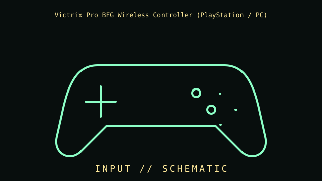

[ INDIVIDUAL COMPONENT // INPUT DEVICES ]
Victrix Pro BFG Wireless Controller (PlayStation / PC)
PlayStation/PC modular gamepad with wireless transmitter, USB-C, swappable modules, rear controls, and trigger stops. This entry identifies this product generation and distinguishes important interface and revision differences.

MODEL IDENTIFICATION: Check the label for the complete model, revision, regional SKU, accessories, and current manufacturer documentation before installation.
Specifications
| Catalog subcategory | Game controllers |
|---|---|
| Catalog identity | Victrix Pro BFG Wireless Controller (PlayStation / PC) |
| Era / family | Modular wireless gamepad, PlayStation edition |
| Product-specific features | Interchangeable modules and D-pad/stick layouts; four rear paddles; trigger stops; 3.5 mm headset jack. This record is the PlayStation/PC edition, not Xbox edition. |
| Interface | 2.4 GHz USB transmitter or wired USB-C; platform selector, firmware, and host protocol determine operation. |
| Compatibility guidance | Manufacturer lists PS5, PS4, and Windows PC for this edition. Remapping, calibration, profiles, and firmware use Victrix Control Hub on supported hosts; features vary by platform. Confirm edition and receiver. |
| Variants and service note | PlayStation/PC and Xbox Pro BFG editions have different licensing and support; connector shape does not prove cross-console compatibility. |
Installation & compatibility checks
- Record the exact model/revision, interface mode, receiver or cable identity, firmware, driver version, and supported host before testing.
- Check connector, power, protocol, OS/driver, and application support separately; physical connector fit alone does not establish feature compatibility.
- For wireless models, preserve original receivers and pairing data. Test wired and radio modes independently where both are provided.
- Do not infer performance from manufacturer maximums alone; note settings, application, host, and measurement method for measured results.
Model notes
PlayStation/PC and Xbox Pro BFG editions have different licensing and support; connector shape does not prove cross-console compatibility.
Manufacturer lists PS5, PS4, and Windows PC for this edition. Remapping, calibration, profiles, and firmware use Victrix Control Hub on supported hosts; features vary by platform. Confirm edition and receiver.
Sources & further reading
- Manufacturer — Victrix Pro BFG Wireless Controller (PlayStation / PC) product specificationsProduct reference; confirm exact variant and regional SKU.
- Manufacturer — Victrix Pro BFG Wireless Controller (PlayStation / PC) support and manualsSupport reference for drivers, manuals, and revision-specific guidance.
Manufacturer model references are authoritative for exact revisions and regional variants. Specifications can differ by package, firmware, region, and driver generation.